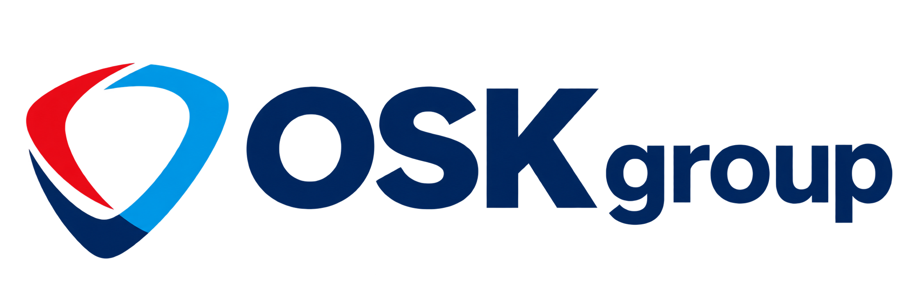

База расширена по публичным карточкам организаций 2ГИС. На карте только точки с уличным адресом и координатами организации. Адреса с сайтов операторов сохранены; их координаты определены по зданиям OpenStreetMap. В карточке ККС адрес дополнительно сверен с Яндекс Картами.
Исходная рабочая зона — 160 адресных записей: Екатеринбург целиком и города западнее. Добавлены компании из отчёта Битрикс24 за 26.10–01.11.2026. Записи с известным городом показаны условно около центра; это не адрес офиса. Восточные адреса скрыты и сохранены в базе. Это выборка по доступным результатам поиска, а не полный реестр офисов России. В каждой карточке есть источник. Отдельные точки — головные офисы, кассы или адреса организаций, где приём посетителей не подтверждён. Уточняйте приём и график работы перед поездкой.
Салоны связи, магазины и явно обозначенные посредники исключены по типу карточки. Признак «местный / региональный» исключает известные федеральные бренды; независимость собственников отдельно не проверена. Исторические названия могут сохраняться в справочниках.
Услуги относятся к оператору в целом и взяты из исходного каталога. Для новых организаций без сведений об услугах категория требует уточнения.
Снимите фильтр «Только подтверждённые координаты», чтобы увидеть условные отметки у центров городов. Если город неизвестен, запись доступна только в таблице. Данные собраны 02.11.2026.